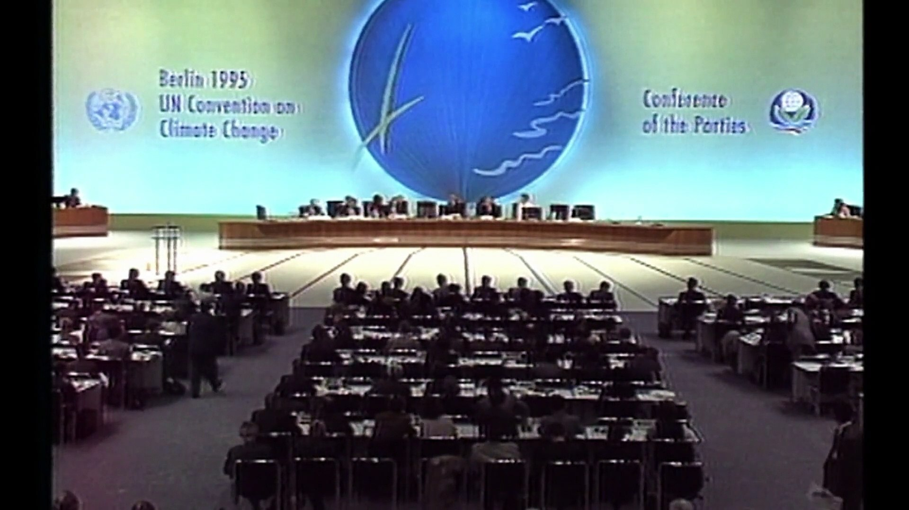
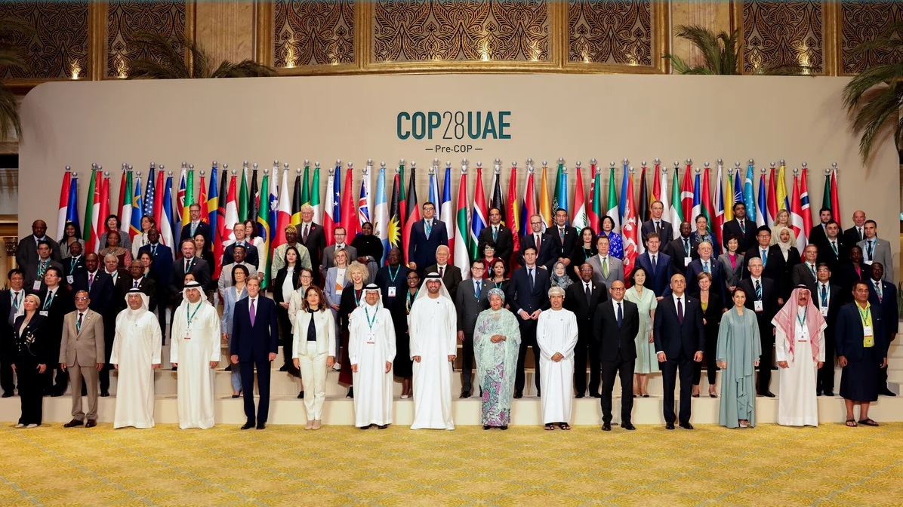
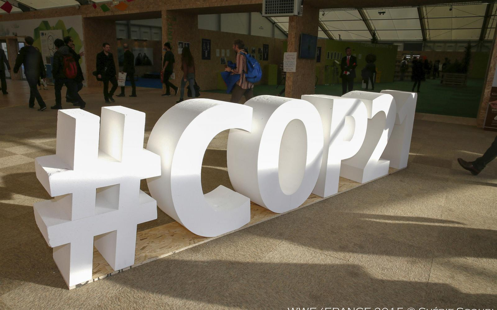
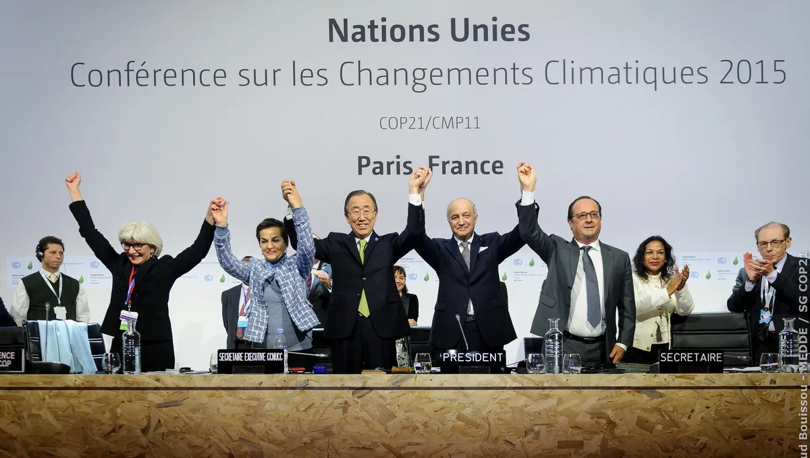
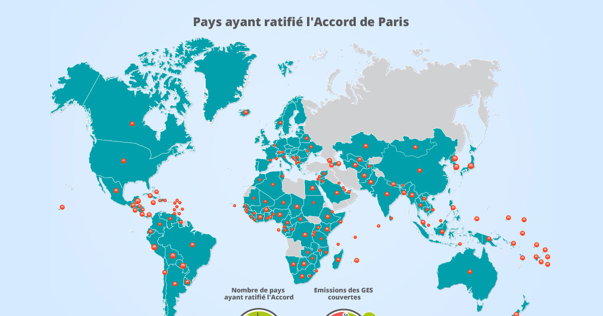
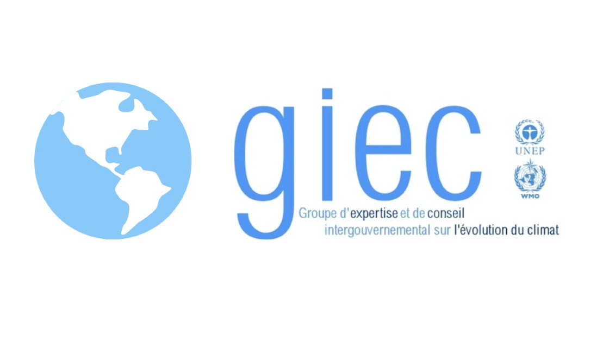
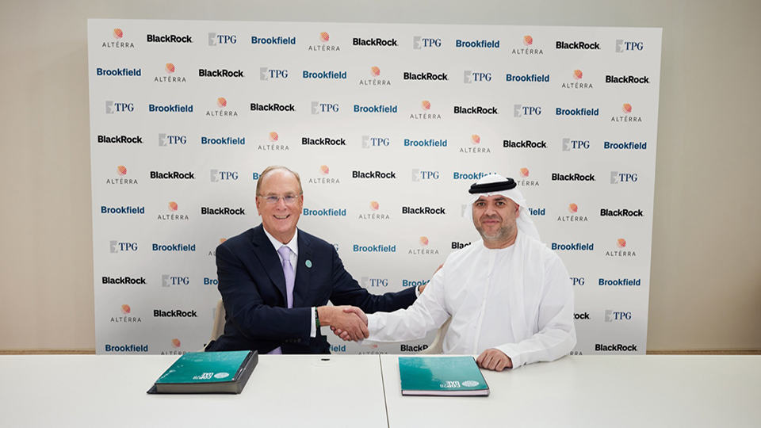
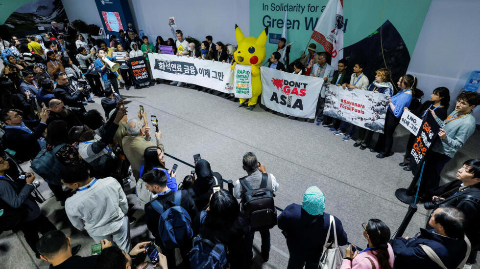

Mission académique au développement durable - Académie de Limoges

Histoire des COP
Les Conférences des Parties (COP) sont des réunions annuelles organisées dans le cadre de la Convention-cadre des Nations Unies sur les changements climatiques (CCNUCC), adoptée lors du Sommet de la Terre à Rio de Janeiro en 1992. La première COP a eu lieu à Berlin en 1995, marquant le début d'un processus continu de négociations internationales visant à lutter contre le changement climatique. L'une des COP les plus marquantes est la COP3, tenue à Kyoto en 1997, qui a abouti au Protocole de Kyoto, le premier accord international juridiquement contraignant fixant des objectifs de réduction des émissions de gaz à effet de serre pour les pays industrialisés. La COP15 à Copenhague en 2009 a été une autre étape importante, bien que les résultats aient été mitigés, elle a posé les bases pour des engagements plus ambitieux. La COP21 à Paris en 2015 a été un tournant majeur avec l'adoption de l'Accord de Paris, qui vise à limiter le réchauffement climatique bien en dessous de 2°C par rapport aux niveaux préindustriels, avec des efforts pour limiter l'augmentation à 1,5°C. Depuis, chaque COP continue de jouer un rôle crucial dans la mise en œuvre et le renforcement des engagements climatiques mondiaux.

Organisation des COP
L'organisation des COP implique plusieurs acteurs clés, chacun ayant un rôle spécifique. Les États membres de la CCNUCC sont les principaux participants, représentés par des délégations nationales composées de ministres, de négociateurs et d'experts techniques. Ils sont responsables de la prise de décisions et de la négociation des accords. Les Organisations Non Gouvernementales (ONG) jouent un rôle crucial en apportant des perspectives indépendantes et en plaidant pour des politiques climatiques ambitieuses. Elles participent souvent en tant qu'observateurs et organisent des événements parallèles pour sensibiliser et mobiliser l'opinion publique. L'ONU, par le biais de la CCNUCC, assure la coordination et le soutien logistique des COP. Le Groupe d'experts intergouvernemental sur l'évolution du climat (GIEC) fournit des évaluations scientifiques qui servent de base aux négociations. Les médias jouent un rôle essentiel en couvrant les événements, en informant le public et en influençant l'opinion publique sur les enjeux climatiques. Leur présence assure une transparence et une responsabilité accrues dans le processus de négociation.

Enjeux des COP
Les négociations lors des COP se concentrent principalement sur deux aspects clés : l'atténuation et les fonds verts. L'atténuation fait référence aux efforts visant à réduire les émissions de gaz à effet de serre et à limiter le réchauffement climatique. Les pays négocient des objectifs nationaux de réduction des émissions, connus sous le nom de Contributions Déterminées au niveau National (CDN), et des mécanismes pour les atteindre, tels que les marchés du carbone et les technologies propres. Les fonds verts, quant à eux, sont des mécanismes financiers destinés à soutenir les projets environnementaux et climatiques. Les négociations portent sur la mobilisation de ressources financières pour ces fonds, ainsi que sur les critères et les procédures d'accès aux financements, en particulier pour les pays en développement. Ces discussions sont cruciales pour assurer une réponse équitable et efficace à la crise climatique mondiale, en permettant aux pays de mettre en œuvre des actions concrètes pour réduire leurs émissions et s'adapter aux impacts du changement climatique.

Objectifs Généraux de la Simulation
La simulation vise à reproduire les négociations climatiques internationales en mettant en lumière les enjeux, les acteurs et les mécanismes de prise de décision. L'objectif est de sensibiliser les participants aux défis de la lutte contre le changement climatique et de les encourager à trouver des solutions équilibrées et durables.

Rôle des États
Les États jouent un rôle central dans les négociations climatiques. Ils représentent les intérêts de leurs citoyens et négocient des accords internationaux pour réduire les émissions de gaz à effet de serre. Chaque État a des priorités différentes, ce qui rend les négociations complexes mais essentielles pour atteindre des objectifs communs.
Exemples de stratégies pour les États
Étape
Objectifs
Actions Clés
Exemples Pratiques

Rôle de l'ONU
L'Organisation des Nations Unies (ONU) facilite les négociations climatiques en fournissant un cadre de discussion et en coordonnant les efforts internationaux. Le GIEC (Groupe d'experts intergouvernemental sur l'évolution du climat) joue un rôle clé en fournissant des données scientifiques pour éclairer les décisions politiques.

Rôle des Lobbies
Les lobbies représentent les intérêts des industries et des secteurs économiques. Ils influencent les décisions politiques en défendant des positions souvent liées à leurs activités. Leur rôle est controversé, mais ils sont un acteur incontournable des négociations climatiques.

Rôle des ONG
Les Organisations Non Gouvernementales (ONG) jouent un rôle crucial en sensibilisant le public, en plaidant pour des politiques climatiques ambitieuses et en surveillant les engagements des États. Elles apportent une perspective indépendante et militent pour la justice climatique.
Rôle des Médias
Les médias jouent un rôle essentiel en informant le public sur les enjeux climatiques et en couvrant les négociations internationales. Ils influencent l'opinion publique et contribuent à la transparence des processus décisionnels.
Scénarios RCP et SSP
Les RCP (Representative Concentration Pathways) décrivent les trajectoires de concentration de gaz à effet de serre dans l'atmosphère, tandis que les SSP (Shared Socioeconomic Pathways) décrivent les évolutions socio-économiques possibles. Voici une explication des 4 scénarios combinant RCP et SSP :
Sélectionnez un scénario
Cliquez sur un bouton pour afficher les détails du scénario.